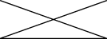
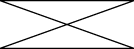

Ya ha aprendido cómo dibujar la mayoría de las formas representadas en el paquete java.awt.geom.
Para crear geometría más complicadas, tales como polígonos, polilíneas, o estrellas use otra clase desde este
paquete, GeneralPath.
Esta clase implementa la interfaz
Shape y representa una
ruta geométrica construída por líneas, y curvas cuadráticas y cúbicas. Los tres constructores en esta clase
pueden crear el objeto
GeneralPath
con la regla predeterminada de curvado (WIND_NON_ZERO), la regla de curvado dada
(WIND_NON_ZERO o WIND_EVEN_ODD), o la capacidad de coordenadas inicial especificada.
La regla de curvado especifica como se determina el interior de una ruta.
public void paint (Graphics g) {
Graphics2D g2 = (Graphics2D) g;
...
}
Para crear una instancia vacía de GeneralPath llame new GeneralPath() y después
agregue segmentos a la forma usando los métodos siguientes:
moveTo(float x, float y) – Mueve el punto actual de la ruta al punto dado
lineTo(float x, float y) – Agregue un segmento de línea a la ruta actual
quadTo(float ctrlx, float ctrly, float x2, floaty2) – Agrega un segmento de curva
cuadrática a la ruta actual
curveTo(float ctrlx1, float ctrly1, float ctrlx2, float ctrly2, float x3, floaty3) –
Agrega un segmento de curva cúbica a la ruta actual
closePath() – Cierre la ruta actual
El ejemplo siguiente ilustra cómo dibujar una polilínea usando GeneralPath:
// dibujar GeneralPath (polilínea)
int x2Points[] = {0, 100, 0, 100};
int y2Points[] = {0, 50, 50, 0};
GeneralPath polyline =
new GeneralPath(GeneralPath.WIND_EVEN_ODD, x2Points.length);
polyline.moveTo (x2Points[0], y2Points[0]);
for (int index = 1; index < x2Points.length; index++) {
polyline.lineTo(x2Points[index], y2Points[index]);
};
g2.draw(polyline);
|
 |
Este ejemplo ilustra cómo dibujar un polígono usando GeneralPath:
// dibuja GeneralPath (polígono)
int x1Points[] = {0, 100, 0, 100};
int y1Points[] = {0, 50, 50, 0};
GeneralPath polygon =
new GeneralPath(GeneralPath.WIND_EVEN_ODD,
x1Points.length);
polygon.moveTo(x1Points[0], y1Points[0]);
for (int index = 1; index < x1Points.length; index++) {
polygon.lineTo(x1Points[index], y1Points[index]);
};
polygon.closePath();
g2.draw(polygon);
|
 |
Tenga en cuenta que la única diferencia entre los dos últimos ejemplos de código es el método
closePath (). Este método crea un polígono a partir de una polilínea dibujando una línea recta
de regreso a las coordenadas del último moveTo.
Para agregar una ruta específica al final de su objeto GeneralPath use uno de los métodos
append(). El ejemplo de código
ShapesDemo2D.java contiene implementaciones adicionales de formas arbitrarias.